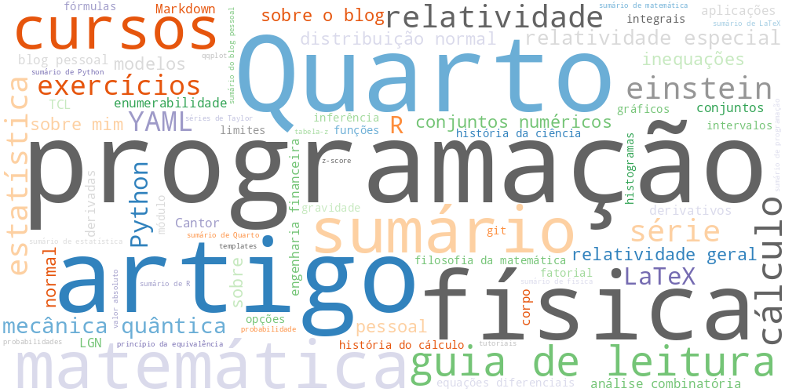

Tags

📚 Todas as Tags
programação (16) Quarto (14) artigo (13) física (11) matemática (11) sumário (11) cursos (9) guia de leitura (9) cálculo (7) einstein (5) estatística (5) relatividade (5) série (5) YAML (4) exercícios (4) LaTeX (3) Python (3) R (3) mecânica quântica (3) relatividade especial (3) conjuntos numéricos (2) distribuição normal (2) inequações (2) modelos (2) normal (2) pessoal (2) relatividade geral (2) sobre (2) sobre mim (2) sobre o blog (2) Cantor (1) LGN (1) Markdown (1) TCL (1) análise combinatória (1) aplicações (1) blog pessoal (1) conjuntos (1) corpo (1) derivadas (1) derivativos (1) engenharia financeira (1) enumerabilidade (1) equações diferenciais (1) fatorial (1) filosofia da matemática (1) funções (1) fórmulas (1) git (1) gravidade (1) gráficos (1) histogramas (1) história da ciência (1) história do cálculo (1) inferência (1) integrais (1) intervalos (1) limites (1) módulo (1) opções (1) princípio da equivalência (1) probabilidade (1) probabilidades (1) qqplot (1) sumário de LaTeX (1) sumário de Python (1) sumário de Quarto (1) sumário de R (1) sumário de estatística (1) sumário de física (1) sumário de matemática (1) sumário de programação (1) sumário do blog pessoal (1) séries de Taylor (1) tabela-z (1) templates (1) tutoriais (1) valor absoluto (1) z-score (1)